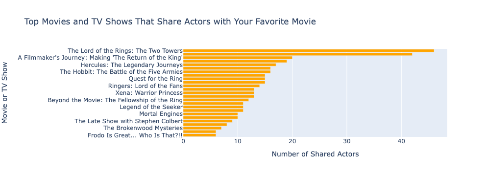

import scrapy
class TmdbSpider(scrapy.Spider):
name = 'tmdb_spider'
def __init__(self, subdir="", *args, **kwargs):
self.start_urls = [f"https://www.themoviedb.org/movie/{subdir}/"]Today I’ll be using webscraping (scrapy) to answer the following question: What movie or TV shows share actors with your favorite movie or show?
First, I’ll write a webscraper for finding shared actors on https://www.themoviedb.org/. Then, I’ll use the results from my scraper to make recommendations.
1. Setup
First, I need to get the url of the movie I want recommendations from. My favorite movie is The Lord of the Rings: The Return of the King (2003), so I’ll be using this link:
https://www.themoviedb.org/movie/122-the-lord-of-the-rings-the-return-of-the-king
Next, I’ll initialize project, running the following in the terminal:
conda activate PIC16B-24F
scrapy startproject TMDB_scraper
cd TMDB_scraper
This creates a scrapy project called TMDB_scraper’. From here, I need to go into my settings.py file and add
CLOSESPIDER_PAGECOUNT = 20
This is just for testing (it prevents your scraper from downloading too much data) and we’ll remove it later. With this, we can move onto writing our scraper.
2. Write the Scraper
In a new file called tmdb_spider.py inside the spiders directory, I’ll define my scraper function.
class TmdbSpider(scrapy.Spider) defines a new class called TmdbSpider that inherits from Scrapy’s base Spider class. The spider is given a name 'tmdb_spider. __init__ initializes the class, taking in a subdir argument and two other optional *args and **kwargs.
self.start_urls is a list of URLs that the spider will start scraping from. Here, it’s defined as [f”https://www.themoviedb.org/movie/{subdir}/”], where {subdir} is replaced with the value passed to the spider.
Next, I’ll define three parsing methods for the TmdbSpider class.
def parse(self,response):
#redirect to cast and crew page, call parse_full_credits on response object
cast_url = response.url + "/cast"
yield scrapy.Request(response.urljoin(cast_url), callback=self.parse_full_credits)The first method, parse(self,response) first sets the url of the cast and crew page by adding “/cast” to the url of the response object (in our case, https://www.themoviedb.org/movie/122-the-lord-of-the-rings-the-return-of-the-king).
Next using scrapy.Request, its make a request to this url (response.urljoin() ensures it is a url), and uses the callback= function to call the parse_full_credits so that when the request to the cast page is completed, parse_full_credits will be called with the response of that page.
def parse_full_credits(self, response):
# Select all actor (no crew) links
actor_links = response.css("ol.people.credits:not(.crew) li div.info a::attr(href)").getall()
# create request for each actor link, calling parse_actor_page on it
for link in actor_links:
yield scrapy.Request(response.urljoin(link), callback=self.parse_actor_page)The next method parse_full_credits finds the links to each actor’s page and will then makes requests to each of those pages.
Using response.css, it collects all the links for the actors (excluding crew). Then with a simple for loop, it goes through each link, sending a request to that actor’s page and calling parse_actor_page on the response of that page.
def parse_actor_page(self, response):
# get actor name
actor_name = response.css("h2.title a::text").get()
# Find all titles in the acting section
titles = response.css("h3:contains('Acting') + table td.role.true.account_adult_false.item_adult_false a.tooltip bdi::text").getall()
# remove duplicates to ensure all titles are unique
unique_titles = list(set(titles))
# Yield dictionary the actor's name and each title
for title in unique_titles:
yield {"actor": actor_name, "movie_or_TV_name": title}The last method parse_actor_page goes through each actor’s page and retrieves the actor’s name and a list of unique movie or TV titles in which they have performed, found in their “Acting” section.
First, it retrieves the actor name using response.css and the appropriate css selector.
Then, it selects all the titles in the acting section, once again using response.css and itscss selector.
To remove duplicates, it runs list(set(titles))
Finally, it runs through each title and yields a dictionary with “actor” as the actor name for that page, and “movie_or_TV_name” as the title in the for loop.
And that’s our scraper! To test it, I use the scrapy shell. For instance in the terminal:
scrapy shell “https://www.themoviedb.org/movie/122-the-lord-of-the-rings-the-return-of-the-king” actor_links = response.css(“ol.people.credits:not(.crew) li div.info a::attr(href)”).getall() print(actor_links)
With this I can check that my actor_links inside parse_full_credits is properly selecting all the actors under the Cast section (not crew).
After extensive testing with the scrapy shell and I’m sure my scraper is working, I can use it to extract the data I want.
In the settings.py file, I’ll comment out
CLOSESPIDER_PAGECOUNT = 20
and in the terminal, run
scrapy crawl tmdb_spider -o results.csv -a subdir=122-the-lord-of-the-rings-the-return-of-the-king
Cheking my TMDB folder, there is now a file called results.csv with actors’ names and the movies they starred in!
3. Make my Recommendations
import pandas as pd
import plotlyLet’s read in the csv file located in the TMDB file.
df = pd.read_csv("/Users/calebwilliams/TMDB_scraper/results.csv")
df.head(10)| actor | movie_or_TV_name | |
|---|---|---|
| 0 | Christian Rivers | Feeder |
| 1 | Christian Rivers | Minutes Past Midnight |
| 2 | Christian Rivers | The Lord of the Rings: The Two Towers |
| 3 | Christian Rivers | The Lord of the Rings: The Return of the King |
| 4 | Christian Rivers | The Hobbit: An Unexpected Journey |
| 5 | Christian Rivers | The Hobbit: The Battle of the Five Armies |
| 6 | Christian Rivers | Mortal Engines |
| 7 | Christian Rivers | The Lovely Bones |
| 8 | Christian Rivers | The Lord of the Rings: The Fellowship of the Ring |
| 9 | Christian Rivers | The Making of 'The Frighteners' |
In order to make a recommendation, I ant to make a sorted list with the top movies and TV shows that share actors with my favorite movie.
I’ll use .value_counts() to get the counts of actors for each movie.
recommmended_titles = df['movie_or_TV_name'].value_counts().reset_index()
recommmended_titles.columns = ['movie_name', 'number_of_shared_actors']
# 1st movie is my favorite movie, so I don't want to recommend that
recommmended_titles = recommmended_titles.drop(0)
# top results
recommmended_titles.head(25)| movie_name | number_of_shared_actors | |
|---|---|---|
| 1 | The Lord of the Rings: The Two Towers | 46 |
| 2 | The Lord of the Rings: The Fellowship of the Ring | 42 |
| 3 | A Filmmaker's Journey: Making 'The Return of t... | 20 |
| 4 | The Hobbit: An Unexpected Journey | 19 |
| 5 | Hercules: The Legendary Journeys | 17 |
| 6 | The Hobbit: The Battle of the Five Armies | 16 |
| 7 | A Passage to Middle-Earth: Making of 'Lord of ... | 16 |
| 8 | Film Collectibles: Capturing Movie Memories | 15 |
| 9 | Quest for the Ring | 15 |
| 10 | Reunited Apart | 15 |
| 11 | Ringers: Lord of the Fans | 14 |
| 12 | The Hobbit: The Desolation of Smaug | 13 |
| 13 | Xena: Warrior Princess | 13 |
| 14 | The Making of The Fellowship of the Ring | 13 |
| 15 | Beyond the Movie: The Fellowship of the Ring | 12 |
| 16 | The Quest Fulfilled: A Director's Vision | 11 |
| 17 | Legend of the Seeker | 11 |
| 18 | King Kong | 11 |
| 19 | Beyond the Movie: The Return of the King | 10 |
| 20 | Mortal Engines | 10 |
| 21 | The Late Show with Stephen Colbert | 9 |
| 22 | Power Rangers | 8 |
| 23 | The Brokenwood Mysteries | 7 |
| 24 | Frodo Is Great... Who Is That?!! | 6 |
| 25 | The Frighteners | 6 |
Voila! I now have a list of movies that are sorted by number of shared actors. Based on this list, the number one recommendation for me is The Lord of the Rings: The Two Towers (I’ve already seen it!).
Let’s go one step further and make a simple bar chart using plotly.
import plotly.express as px
# get top titles
top_recommended_titles = recommmended_titles.head(25)
fig = px.bar(top_recommended_titles,
x='number_of_shared_actors',
y='movie_name',
orientation='h', # horiztonal orientation
title='Top Movies and TV Shows That Share Actors with Your Favorite Movie',
labels={'number_of_shared_actors': 'Number of Shared Actors', 'movie_name': 'Movie or TV Show'})
fig.update_layout(yaxis={'categoryorder':'total ascending'}) # set order from high to low
fig.update_traces(marker_color='orange')
fig.show()